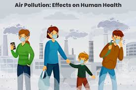
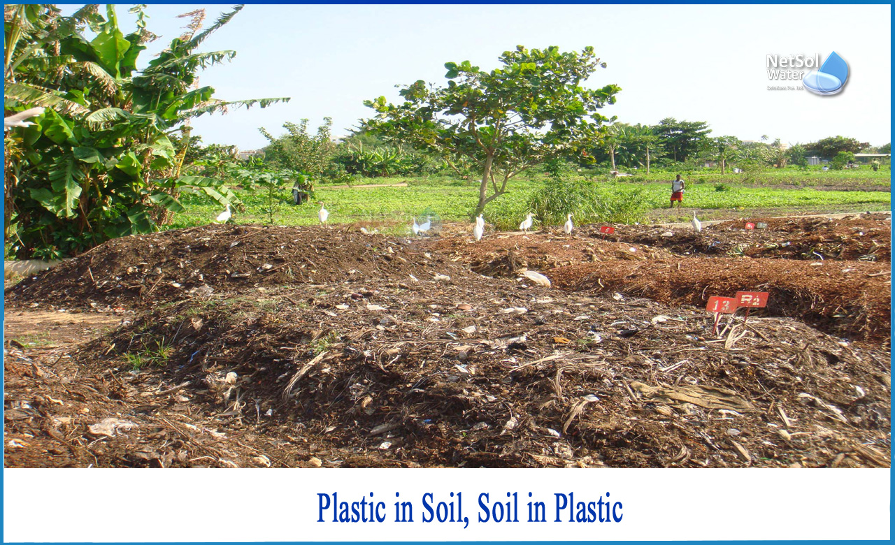
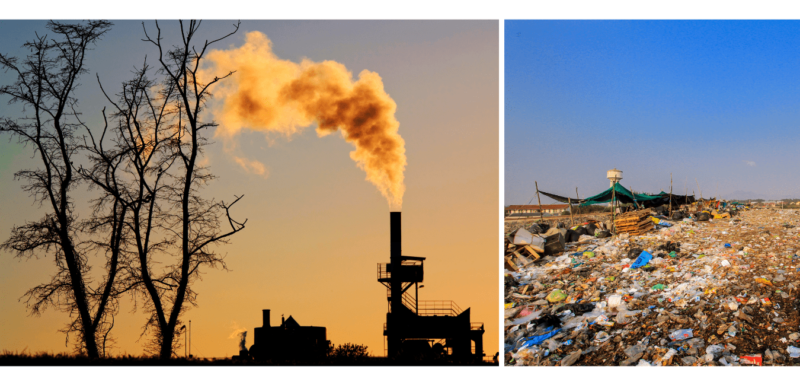
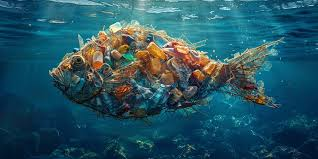

Effects of Plastic Pollution

Impact on Marine Life
Plastic waste in oceans harms marine species, causing entanglement, ingestion, and poisoning, ultimately disrupting marine ecosystems.

Human Health
Microplastics and chemicals from plastics enter the food chain, posing risks to our health, including hormonal disruptions and organ damage.

Soil and Agriculture
Plastic residues in soil reduce fertility, impact crop growth, and harm soil organisms, affecting agricultural productivity and ecosystem health.

Climate Impact
Plastic production and disposal release greenhouse gases, contributing to climate change and environmental degradation.

Wildlife and Biodiversity
Animals on land mistake plastic for food, leading to digestive issues, starvation, and even death, impacting biodiversity and ecosystem balance.